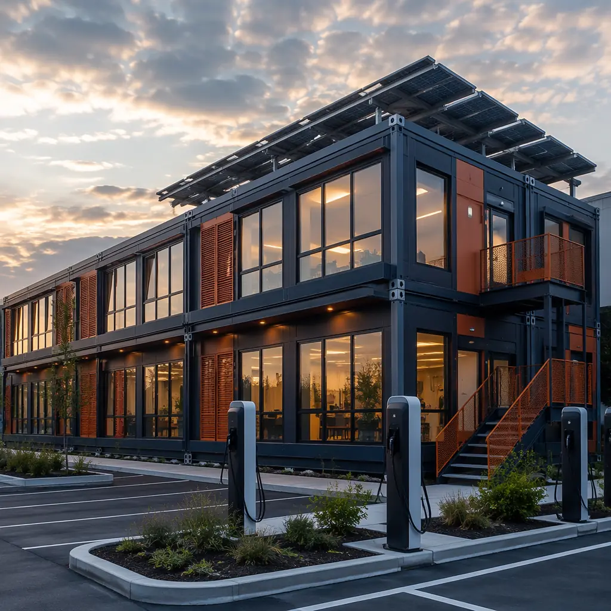
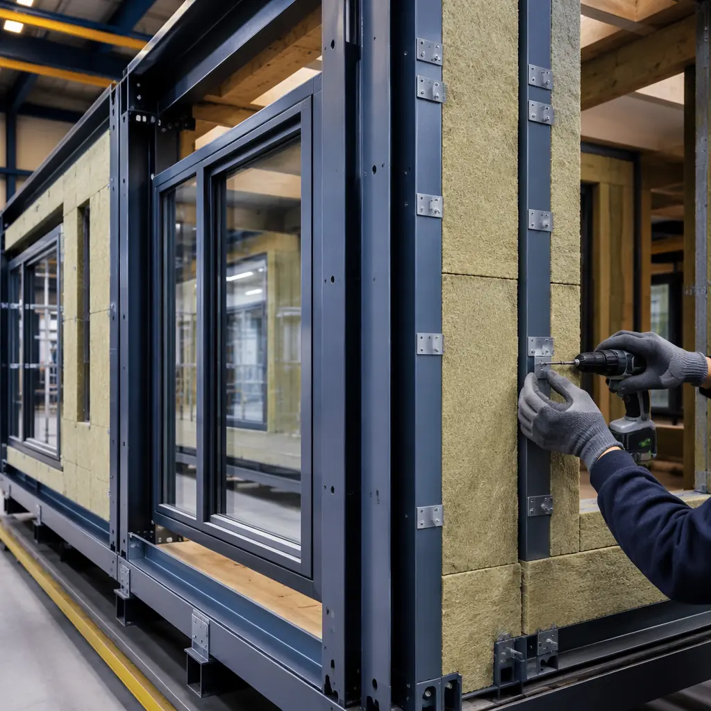
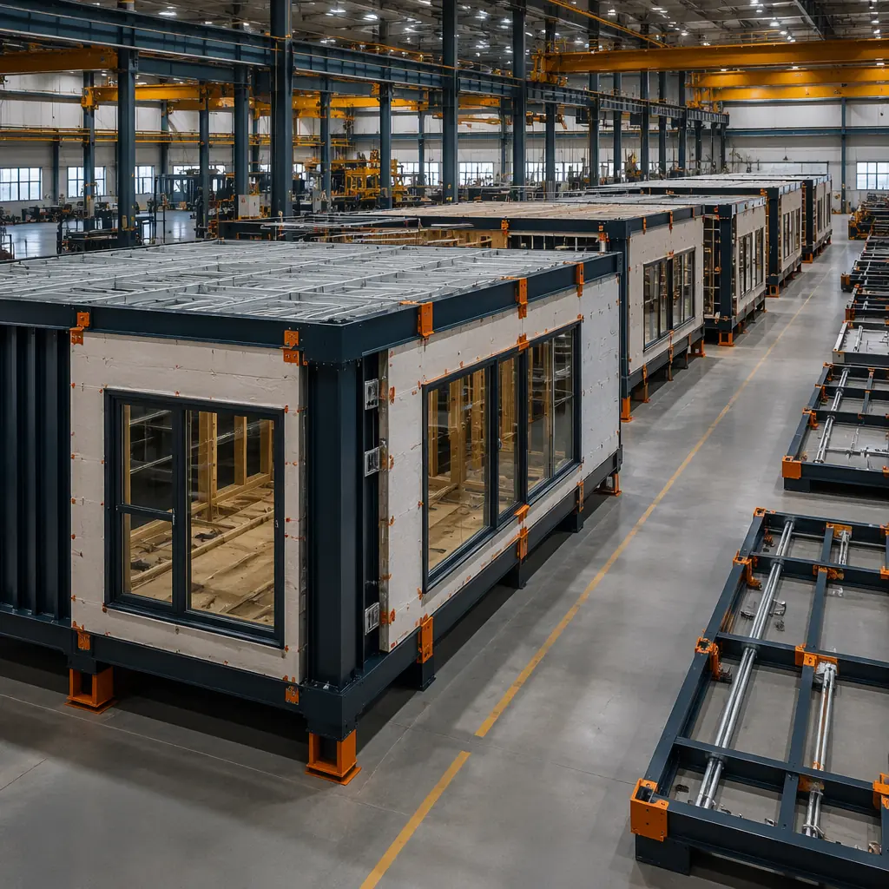
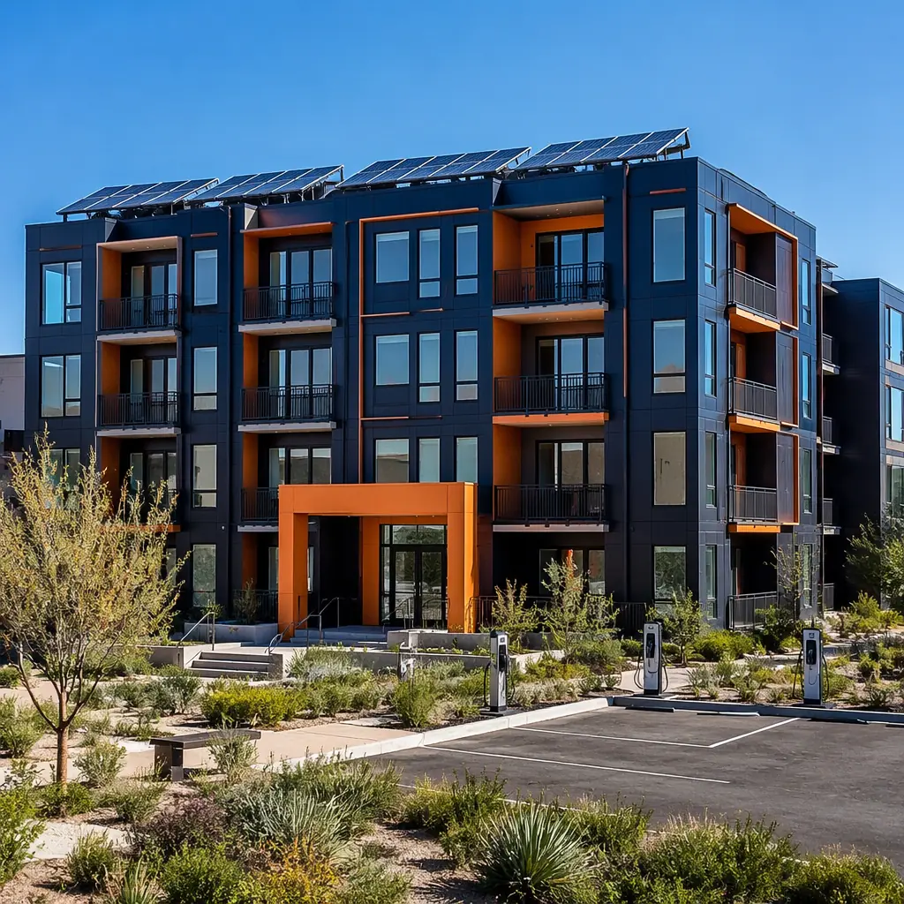

The construction industry has spent two decades pursuing net-zero energy buildings — buildings that produce as much energy as they consume over a year. The pursuit has been expensive, technically demanding, and largely confined to showcase projects with budgets that bear no resemblance to market-rate development. But modular construction is quietly changing the net-zero equation. The very characteristics that make modular construction faster and more predictable — factory precision, controlled environments, systematic quality assurance — are the same characteristics that solve the hardest problems in net-zero building performance. And they solve them at costs that work for market-rate projects, not just sustainability showcases.

The Net-Zero Math — Why Air Tightness Is Everything
For any building aiming for net-zero energy, the operational equation is straightforward: annual energy consumption must equal or be less than on-site renewable energy generation. Since on-site generation is limited by roof area and local solar resource — typically 12–18 kWh per square foot of PV per year in most of the US — the only way to make the equation work is to drive consumption down far enough that available roof area can cover it.
The single largest driver of energy consumption in buildings is not lighting, not appliances, not even HVAC equipment efficiency. It is air leakage. A typical site-built apartment building loses 20–35% of its heating and cooling energy through uncontrolled air infiltration — air leaking through wall penetrations, floor-to-wall joints, window rough openings, electrical outlets, and the thousands of other discontinuities in a site-assembled building envelope. Achieving net-zero in a leaky building is like trying to fill a bucket with a hole in the bottom. You can install a bigger pump (more solar panels), but the fundamental physics works against you.
This is where modular construction's factory advantage becomes transformational. A building envelope's airtightness is measured in air changes per hour at 50 Pascals of pressure (ACH@50Pa). The Passive House standard — the most demanding building energy standard in the world — requires 0.6 ACH@50Pa or less. Typical site-built construction achieves 3–5 ACH@50Pa. Energy Star-certified homes achieve approximately 2–3 ACH@50Pa. Modular construction, by assembling 85–95% of the building envelope inside a factory, consistently achieves 0.4–1.0 ACH@50Pa — within or near Passive House territory — without the premium cost that Passive House construction typically commands.
The reason is not magic; it is geometry. In a factory, every wall assembly is built flat on a jig table, and every penetration — plumbing, electrical, HVAC — is sealed with continuous gaskets and expanding foam that is applied, inspected, and photographed before the next assembly covers it. On a construction site, the same penetration is sealed by a tradesperson working in a cramped stud bay with limited visibility, often in weather conditions that prevent sealant from curing properly. The factory eliminates the single largest source of net-zero cost premium: the rework and retesting required to fix air leaks that are discovered during blower-door testing after the building is enclosed. For developers who want to understand the full sustainability picture, modular construction embodied carbon analysis shows that factory production also reduces upfront carbon by 15–25% compared to site construction through material optimization and reduced waste.
Thermal Bridge Elimination — The Factory Advantage No Site Can Match
Air leakage is one enemy of net-zero performance. Thermal bridging is the other, and it is even harder to fix on a construction site. A thermal bridge is any path that conducts heat through the building envelope more efficiently than the surrounding insulation — typically a steel stud, a concrete slab edge, a window frame, or a balcony connection. In a site-built steel-frame building, every steel stud that connects the exterior sheathing to the interior drywall is a thermal bridge. The thermal conductivity of steel is approximately 1,200 times that of mineral wool insulation, meaning that a 6-inch steel stud creates a heat-flow path equivalent to a 600-foot-thick wall of insulation at the stud location.
The standard site-built solution is continuous exterior insulation — rigid foam or mineral wool boards installed outside the steel framing, separating the structural frame from the exterior environment. This works, but it requires meticulous installation: every fastener that penetrates the exterior insulation to attach cladding creates a point thermal bridge, and every joint between insulation boards that is not perfectly tight creates a linear thermal bridge. On a construction site in January, with wind blowing and drywallers waiting to start, the quality of exterior insulation installation is rarely what the energy model assumed.
In the modular factory, thermal bridge elimination is designed into the module assembly sequence rather than applied as a site-installed correction. The module's steel frame is wrapped on five sides — floor, walls, and ceiling — with continuous insulation before the interior finishes are installed. Because the module is built on a flat jig in a controlled environment, the insulation boards are cut to within 1 mm of the steel frame profile, eliminating the gaps that create linear thermal bridges on site. Exterior cladding attachment uses thermally broken clips — stainless steel brackets with a thermal break pad that reduces heat flow by 85–90% compared to direct screw attachment. The result is a building envelope where the effective R-value is within 5–10% of the nominal insulation R-value, compared to 30–50% degradation in typical site-built steel frame construction due to thermal bridging. For the net-zero energy equation, this means the energy model's assumptions about envelope performance are actually achieved in the finished building — a level of predictability that site construction cannot deliver and that modular building envelope systems have documented across dozens of completed projects.

Renewable Energy Integration — Solar-Ready by Design
Net-zero energy buildings require on-site renewable energy generation, and for most multi-story buildings, that means rooftop solar photovoltaic (PV). But installing PV on a site-built building presents challenges that modular construction solves before the building reaches the site.
Rooftop PV requires structural capacity: the roof must support the weight of the panels, racking system, and ballast (if used), plus snow and wind loads. In site-built construction, the structural engineer designs the roof for PV loads based on assumptions about where the panels will be placed. If the PV contractor later places panels in a different configuration — which happens in approximately 60% of projects because the PV design is finalized after the structure is built — the structural capacity may be inadequate. Retrofitting structural reinforcement through a finished roof is expensive and risks compromising the roofing warranty.
In modular construction, the PV-ready roof structure is built into the module design from day one. The module's roof framing includes pre-welded attachment points at every potential panel location, spaced to accommodate standard 60-cell or 72-cell modules. Conduit pathways from the roof to the electrical room are pre-installed inside the module walls, eliminating the need to core-drill through finished floors and fire-rated assemblies. The module roof is factory-tested for the full PV system weight plus local snow and wind loads before the module leaves the factory. When the PV contractor arrives on site, the structural attachment points are already in place, the conduit pathways are already open, and the roof warranty is unaffected because no penetrations need to be added. This integration reduces PV installation cost by 25–40% compared to retrofit installation on a site-built building — savings that go directly to improving the net-zero project's financial feasibility.
Measured Performance — When the Model Meets Reality
The energy modeling industry has a term for the gap between predicted and actual building energy performance: the "performance gap." For site-built buildings, the gap averages 30–50% — meaning the building uses 30–50% more energy than the energy model predicted. For buildings targeting net-zero, a 50% performance gap means the building falls far short of its goal, and the developer is left explaining why the "net-zero" building's utility bills look like any other building's.
Modular construction narrows the performance gap dramatically because it narrows the construction tolerances that cause the gap. The three largest contributors to the performance gap — air leakage greater than modeled, thermal bridging worse than modeled, and HVAC equipment installed differently than specified — are all controlled more tightly in factory production. A study of 12 modular multi-family buildings in the northeastern US found an average performance gap of 8–15%, with several buildings achieving actual energy use within 5% of modeled predictions. The buildings that achieved net-zero energy did so because the energy model's assumptions were actually met by the construction — not because the model was conservative.
| Performance Parameter | Site-Built (Typical) | Modular (Verified) | Net-Zero Threshold |
|---|---|---|---|
| Air leakage (ACH@50Pa) | 3–5 | 0.4–1.0 | ≤1.5 |
| Effective wall R-value (vs nominal) | 50–70% of nominal (thermal bridging) | 90–95% of nominal | ≥85% |
| HVAC duct leakage (% of airflow) | 15–25% | 3–6% | ≤5% |
| Window installation quality (ASTM E2112) | Grade 2 (typical) | Grade 1 (factory-installed, QA-verified) | Grade 1 |
| Performance gap (actual vs modeled energy use) | 30–50% | 8–15% | ≤10% |
Cost to Achieve Net-Zero — Modular vs Site-Built
The premium to achieve net-zero energy performance in a site-built building typically ranges from 8–15% above standard construction cost. This premium buys enhanced insulation, upgraded windows, airtightness detailing, ERV/HRV ventilation systems, and rooftop PV. In modular construction, the premium is typically 3–6% because the factory already delivers enhanced airtightness and thermal performance as standard practice. The incremental cost in modular is primarily the PV system and any supplemental insulation beyond the factory standard — and, as noted above, the PV installation itself costs 25–40% less because the structural and electrical infrastructure is pre-installed.
For a 50-unit apartment building, the net-zero premium difference translates to approximately $150,000–$250,000 in reduced upfront cost. When combined with operational energy savings of $40,000–$60,000 per year (at $0.12/kWh), the net-zero modular building reaches payback on its incremental cost in 3–6 years, compared to 8–15 years for a site-built net-zero building. This financial math is why a growing number of developers are specifying modular specifically for their net-zero and high-performance projects — not just for the speed, but because modular makes the energy-performance numbers actually work. Developers tracking modular building energy efficiency metrics have documented operational cost reductions of 30–50% in modular buildings compared to code-minimum site-built equivalents, even before adding PV.

The Path Forward — Net-Zero at Scale
Net-zero energy buildings have been possible for 20 years. What has been missing is a path to net-zero at market-rate construction costs and market-rate construction schedules. Modular construction provides that path. By making air tightness, thermal bridge elimination, and PV-ready infrastructure standard rather than premium, modular construction changes net-zero from a sustainability aspiration into a financially rational construction decision.
The developers who are leading this shift are not the ones building one-off sustainability showcases. They are the ones building 200-unit apartment complexes, 150-room hotels, and 100,000 sq ft office buildings — all targeting net-zero energy performance because modular makes the numbers work. For developers who have achieved LEED certification through modular construction, net-zero is the logical next step in the sustainability trajectory that factory-built construction enables.
Net-zero energy is not a material specification or a technology purchase. It is an outcome of construction precision. The building methods that deliver the highest precision — at the lowest cost premium — are the methods that will deliver net-zero at scale. Modular construction is that method.
